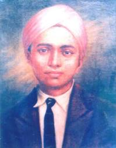

Shaurya Chakra
The Shaurya Chakra is an Indian military decoration awarded for valour, courageous action or self-sacrifice while not engaged in direct action with the enemy. It may be awarded to civilians as well as military personnel, sometimes posthumously. It is third in order of precedence of peacetime gallantry awards and comes after the Ashoka Chakra and the Kirti Chakra. It precedes the Yudh Seva Medal.
1-
PS Gahoon
Major
2-
Kartar Singh, MC
Subedar

3-
Milkha Singh
Lance Naik